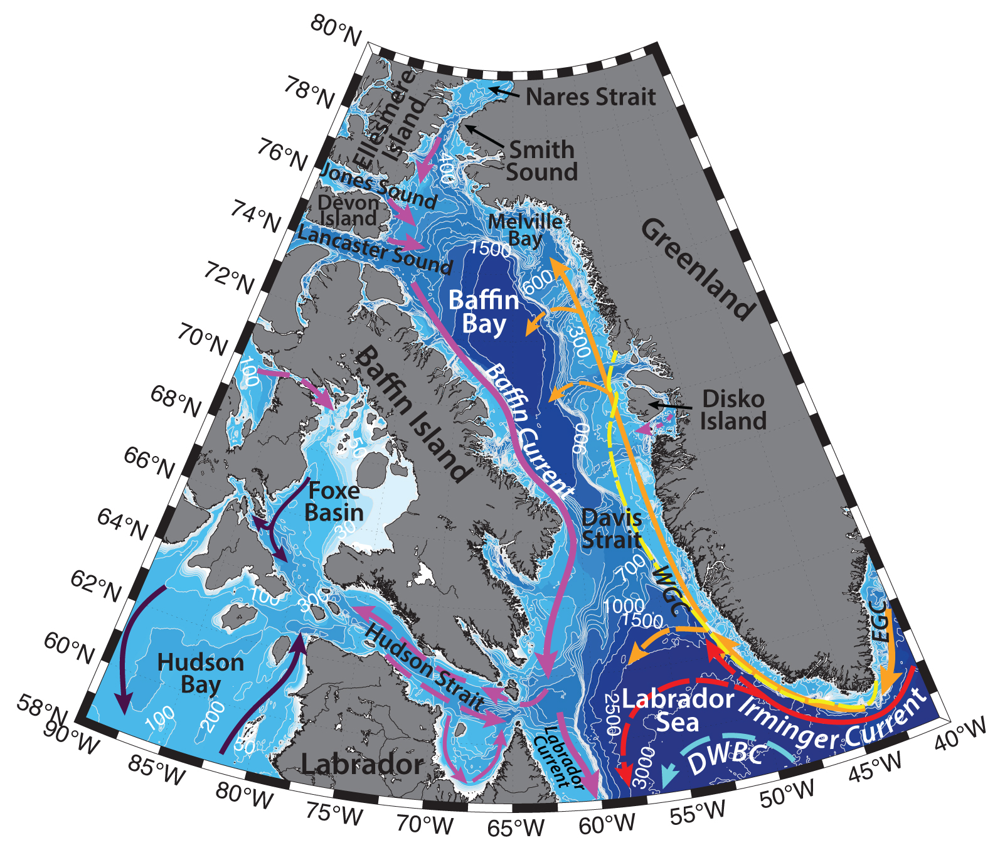

Schematic water circulation patterns and geographical place names in the Southwest Greenland Shelf region. Adopted from Muench (1970), Melling et al. (2001), Cuny et al. (2002), Tang et al. (2004), Seidenkrantz, (2013). Dashed yellow line marks the studied region.
Hydrography of the Southwest Greenland Shelf region is determined by the hydrography of the Labrador Sea and Baffin Bay: by the sea-ice, recurring North Water Polynya, the West Greenland Current and the Irminger Current, atmospheric forcing, icebergs and freshwater runoff from the west coast of Greenland, local upwellings, deep water convection and tides. General circulation of both – the Labrador Sea and the Baffin Bay is predominately cyclonic, formed on the surface by baroclinic boundary West Greenland Current and the Labrador Current and Baffin Current respectively.
The West Greenland Current (WGC; T ∼ −1.8°C, S ≤ 34.5; Cunny et al., 2002) carries fresh and cold water from the Nordic Seas northwestwards along the western Greenland shelf and slope. The warmer and saltier Irminger Sea Water (ISW; T ∼ 4.5°C, S ∼ 34.95 psu) is advected underneath the colder WGC. It is the remnant water from Gulf Stream, advected in the Irminger Current along the Subpolar Gyre. Its transport has been estimated to be ~ 11 Sv (Clarke, 1984). ISW travels around the Labrador Sea, with the core situated at about 500 m depth, and is modified and deepened on its way. It is then found below the fresh water of the Labrador Current. The Irminger Current sheds eddies, that bring heat to the center of the Labrador Sea, and play important role in the restratification after winter convection (e.g. Yashayaev, 2007) and it keeps the Labrador Sea ice free (Cuny et al., 2002).
On its way northwards, West Greenland Current also collects freshwater and icebergs from the Greenland Ice Sheet (Seidenkrantz, M.-S., 2013). While WGC is thought to transport heat and salt (in the Baffin Bay it also carries Irminger Sea Water) into northern Baffin Bay (Melling et al., 2001), it is unclear, how far north the current can propagate, due to the lack of in-situ measurements in the Baffin Bay. Some studies (e.g. Loder et al., 1998) suggest, that it can flow north up to about 75°N, where it turns cyclonically around the Baffin Bay and joins the Baffin Current. Using a three-dimensional circulation model Tang with coauthors (2004) calculated, that in the vicinity of 66°N part of the inflow from the West Greenland current in the upper layer of eastern Davis Strait reverses its direction and is advected back around the Labrador Sea. However, at 500 m depth, the inflow is much weaker and the southward counter current is evident from the model results of Tang et al. (2004). According to this research, the mentioned outflow originates on the Greenland slope inside the Baffin Bay and flows along the 2000 m isobath. Cuny with coauthors (2002) have reported, that based on the surface drifters, as well as the deep floats, the shallow West Greenland Current significantly slows around 62°N where the slope decreases as the 3000-m and 2000-m isobaths curve westward. As estimated by Cuny et al. (2005) the northward Greenland Shelf transport is ~0.8 Sv.
The Labrador Sea is an important site of deep winter convection, which plays a major role in the Atlantic Meridional Overturning Circulation (AMOC; e.g. Cunny et al., 2002; Pickart et al., 2002; Yashayaev, 2007; Zantopp et al., 2017). Deep convection also redistributes the nutrients across the basin and southwards (Yashayaev, 2007). A large variety of factors are believed to influence the convection, including the atmospheric forcing (e.g. fluctuations of the North Atlantic Oscillation), regional circulation, remote input of heat and salt from the Arctic and subtropics, and the Labrador Sea’s memory of previous convective seasons (e.g. Pickart et al., 2002; Yashayaev, 2007). Intense surface cooling (e.g. due to strong cold winds from Canada) causes the convection reach up to 2000 m depth and form Labrador Sea Water (LSW; 27.74 kg/m3 – 27.8 kg/m3; Zantopp et al., 2017), which later spreads into the outer Atlantic Ocean.
LSW formation is prone to large interannual and decadal, as well as spatial variability. It doesn’t happen every year, as well as across the whole basin. Clarke and Gascard (1983) suggested that the deepest convection takes place north of Hamilton Bank and close to the Labrador slope. Characteristics of the water masses also depend on the preliminary conditions in the basin and the strength of convection: e.g. Pickart with coauthors (2002) have witnessed the formation of two modes of LSW: a cold/fresh/dense classical LSW in the western side of the interior basin (seaward of the western continental slope) and a warmer, saltier and lighter LSW on the western continental slope directly into the Deep Western Boundary Current. In their (2003) study Pickart with coauthors argue that overturning to a depth of 1500-2000 m can form LSW as well in the southwest Irminger Sea.
Downstream of convection area, new Labrador Sea Water may get involved into the Deep Western Boundary Current (DWBC), which travels cyclonically along the 3000 m isobath in the Labrador Basin (e.g. Cunny et al., 2002). It also carries North-East Atlantic Deep Water (NEADW; T∼ 3°C, S ∼ 34.92; 2500 – 3200 m) and the denser Denmark Strait Overflow Water (DSOW; T ≤ 1.5°C, S ∼ 34.9 psu; e.g. Cunny et al., 2002; Zantopp et al., 2017). DWBC, transporting around 30 Sv of NADW (Zantopp et al., 2017) feeds the lower limb of the AMOC and is responsible for a significant part of the poleward ocean heat transport (Zantopp et al., 2017).
Nearly one-third of DSOW is the dense water (Jonsson and Valdimarsson, 2004), originated from the northwestern part of the Iceland Sea, where the deepest and densest convection occurs, as well as from farther north in the Greenland Sea (Messias et al. 2008; Vage et al., 2015; Pickart et al., 2017). This water has a potential density anomaly larger than 28.03 kg m−3 (Vage et al. 2011). DSOW exhibits strong interannual variability, featuring distinct short-term basin-scale events or pulses of anomalously cold and fresh water, separated by warm and salty overflow modifications. It may take around a year for these waters to reach the Labrador Peninsula side and the central Labrador Basin from the Greenland (Yashayaev, 2007).
The Baffin Current carries the Arctic outflow from the Canadian Arctic Archipelago southwards. In northwestern Baffin Bay it occupies the entire water column, to a depth of 500 m (Melling et al., 2001). This cold and relatively fresh water is advected along the Baffin Island coast and, further joins the Labrador Current – flwoing along the Labrador Peninsula down to Newfoundland (Seidenkrantz, 2013). The thermohaline circulation of the North Atlantic Ocean is sensitive to the volume and freshwater transport from Arctic Ocean, as Arctic waters freshen the surface, stabilizing the water column and thus reduce the rate of deep-water formation in the Labrador Sea (Tang et al., 2004).
Baffin Bay is partially ice-covered most months of the year, except for August and September, with the maximum ice coverage in February – March (e.g. Seidenkrantz, 2013). During summertime ice disappears quickly in the eastern part of the Baffin Bay due to relatively warm West Greenland Current, while in the western and central parts of the bay ice remains much longer, as a consequence of the cold Arctic Water at the surface. Baffin Current at the western margin of the bay also transports ice southwards along the Baffin Island shore towards the Davis Strait. During cold season ice thickness also tends to decrease towards Greenland (e.g. Tang et al., 2004; Seidenkrantz, 2013). During the annual ice retreat, phytoplankton blooms are commonly observed at the ice edge. Though they are generally short-lived, they have a substantial impact on the ecosystem, providing food for the benthic communities in the region (Seidenkrantz, M.-S., 2013)
Glaciers of the west coast of Greenland north of 68 ºN (e.g. Jakobshavn Isbrae ice massif) produce around 1015 kg/year of icebergs, especially in the Disko and Umanak bays (south and north of Disko Island, respectively). No icebergs of significant size are produced by glaciers of the Canadian Archipelago. In general, icebergs with mass greater than 1 million tons tend to drift north, while smaller icebergs tend to drift south- and southeastwards. As icebergs reach the relatively warm Atlantic Waters, while carried southward by the Labrador Current, they melt. Some may reach as far as the Grand Banks (Tang et al., 2004).
During wintertime northerly winds and southward flowing current form the North Water Polynya – a latent heat recurrent polynya in the Northern Baffin Bay and Smith Sound region (e.g. Muench, 1970; Melling et al., 2001). It usually starts to form in winter, often combining a number of leads across the region, and gets to the largest ice-free area in June. The North Water Polynya region is fed by a cold inflow from the Arctic Ocean that flows southward through Smith Sound, however an ice ridge in the Nares Strait prevents ice from the north entering the region (Melling et al., 2001). Polynya is thought to also be sustained by the upwellings of oceanic heat near the Greenland coast in late spring. Ice formed in the North Water Polynya gets entrained into the Baffin Current and can travel southwards into the Labrador Sea (Tang et al., 2004).
Tang with coauthors (2004) have described, that the strength of the currents in the Baffin Bay varies both spatially and seasonally from region to region. As such, for example, except for the Davis Strait, southwestern Baffin Bay and mouth of Lancaster Sound, the flow generally increases with depth. In the vicinity of Davis Strait, the current field is strongly affected by the topography (Tang et al., 2004). Below the mixed layer, the strongest inflow and outflow are both on the Greenland side of the strait separated by only 35 km. Overall, currents tend to be stronger during summer and fall at all depths, compared to winter and spring. Such structure can be explained by either seasonal variations of inflows from the northern straits, or larger transports of the Labrador Sea gyre in fall and winter, or the seasonal density structure of Baffin Bay and Davis Strait. Tang with coauthors (2004) documented the largest seasonal current variability along the Baffin Island slope and in Lancaster Sound.